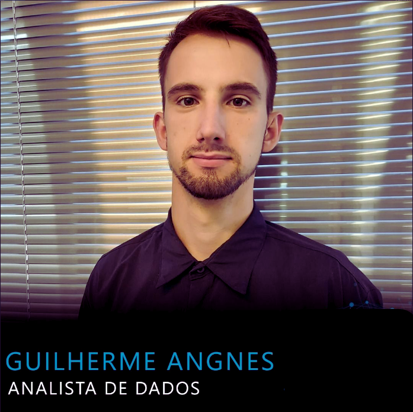

Linguagens e Bancos de Dados
- SQL
- Python
- Shell Script
Aqui você encontrará minhas experiências profissionais, habilidades, projetos e como entrar em contato comigo.
Meu nome é Guilherme Jacó Angnes, formado em Análise e Desenvolvimento de Sistemas e atuo como Analista de Dados.
Atualmente trabalho em uma empresa de software odontológico, realizando extração, manipulação e criação de visões de dados para apoiar a tomada de decisão.
Seus projetos podem ser listados aqui em cards com imagens, descrição, tecnologias utilizadas e resultados.